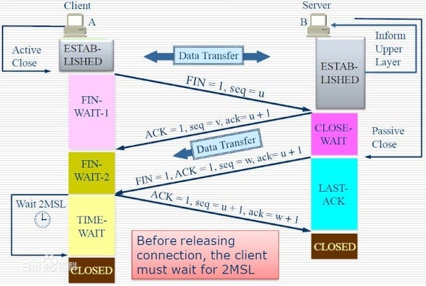

Ch04-TCP 之 四次挥手
August 4, 2021
1. 基本原理 #

2. 为什么 TCP 协议终止链接要四次？ #
- 关闭连接时，客户端向服务端发送 FIN 时，仅仅表示客户端不再发送数据了但是还能接收数据。
- 服务端收到客户端的 FIN 报文时，先回一个 ACK 应答报文，而服务端可能还有数据需要处理和发送，等服务端不再发送数据时，才发送 FIN 报文给客户端来表示同意现在关闭连接。
从上面过程可知，服务端通常需要等待完成数据的发送和处理，所以服务端的 ACK 和 FIN 一般都会分开发送，因此是需要四次挥手。
3. 为什么需要 TIME_WAIT 状态？ #
主动发起关闭连接的一方，才会有 TIME-WAIT 状态。需要 TIME-WAIT 状态，主要是两个原因：
- 防止历史连接中的数据，被后面相同四元组的连接错误的接收；
- 保证「被动关闭连接」的一方，能被正确的关闭；
4. 为什么等待 2MSL，从 TIME_WAIT 到 CLOSE？ #
MSL（Maximum Segment Lifetime），TCP 允许不同的实现可以设置不同的 MSL 值。所谓的 2MSL 是两倍的 MSL(Maximum Segment Lifetime)。MSL 指一个片段在网络中最大的存活时间，2MSL 就是一个发送和一个回复所需的最大时间。如果直到 2MSL，Client 都没有再次收到 FIN，那么 Client 推断 ACK 已经被成功接收，则结束 TCP 连接。
-
保证客户端发送的最后一个 ACK 报文能够到达服务器。因为这个 ACK 报文可能丢失，站在服务器的角度看来，已经发送了 FIN+ACK 报文请求断开了，客户端还没有给回应，应该是发送的请求断开报文它没有收到，于是服务器又会重新发送一次，而客户端就能在这个 2MSL 时间段内收到这个重传的报文，接着给出回应报文，并且会重启 2MSL 计时器。
-
防止类似与“三次握手”中提到了的“已经失效的连接请求报文段”出现在本连接中。客户端发送完最后一个确认报文后，在这个 2MSL 时间中，就可以使本连接持续的时间内所产生的所有报文段都从网络中消失。这样新的连接中不会出现旧连接的请求报文。也就是使旧的数据包在网络因过期而消失。